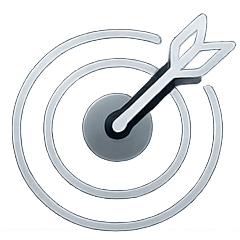

<section class="features__section section">
  <div class="container">
    <div class="features__wrapper wrapper">
      <h2 class="features__title">What’s inside each signal</h2>
      <div class="features__items">
        <div class="feture__item-wrapper">
          <div class="features__item features__item-1">
            <div class="features__icon">
              
            </div>
            <p class="features__item-text">Format</p>
          </div>
          <p class="features__item-text-small">What’s starting to work now</p>
        </div>

        <div class="feture__item-wrapper">
          <div class="features__item features__item-2">
            <div class="features__icon">
              
            </div>
            <p class="features__item-text">Hook & angle</p>
          </div>
          <p class="features__item-text-small">What makes it work and how to test it</p>
        </div>

        <div class="feture__item-wrapper">
          <div class="features__item features__item-3">
            <div class="features__icon">
              
            </div>
            <p class="features__item-text">Ready to test</p>
          </div>
          <p class="features__item-text-small">No long analysis or manual research</p>
        </div>
      </div>
      <p class="features__text">You don’t search manually — you get a pre-filtered signal ready to test</p>
      <a href="#" class="radar__btn">
        <div>
          <span>Start for $39</span>
        </div>
      </a>
    </div>
  </div>
</section>
